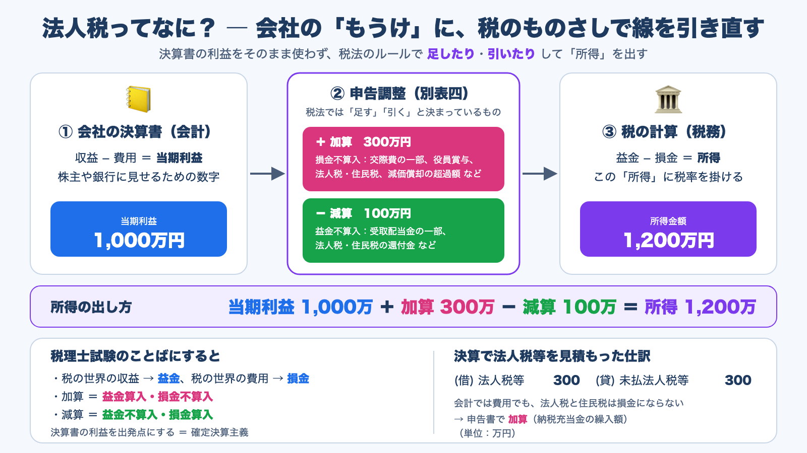
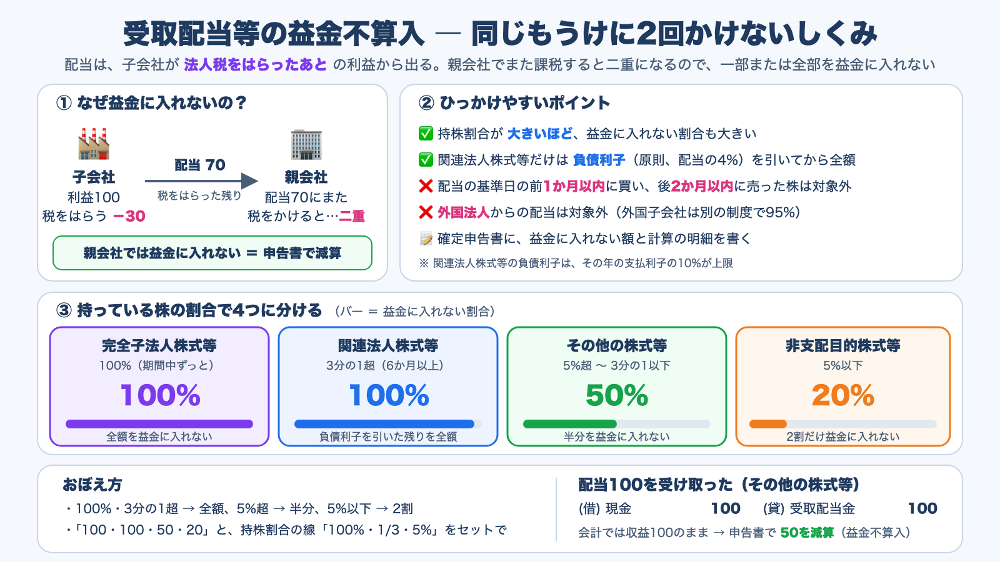
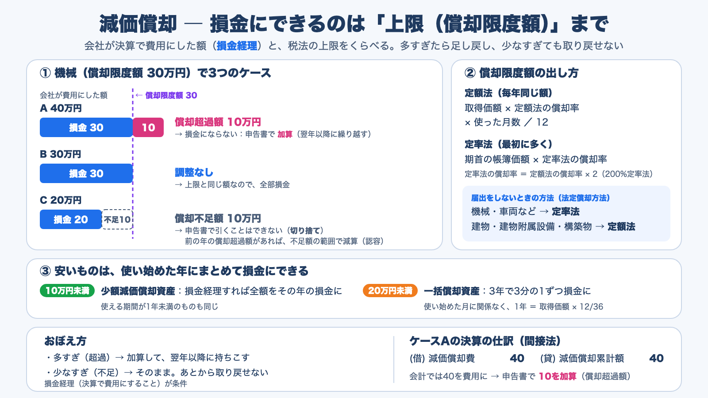
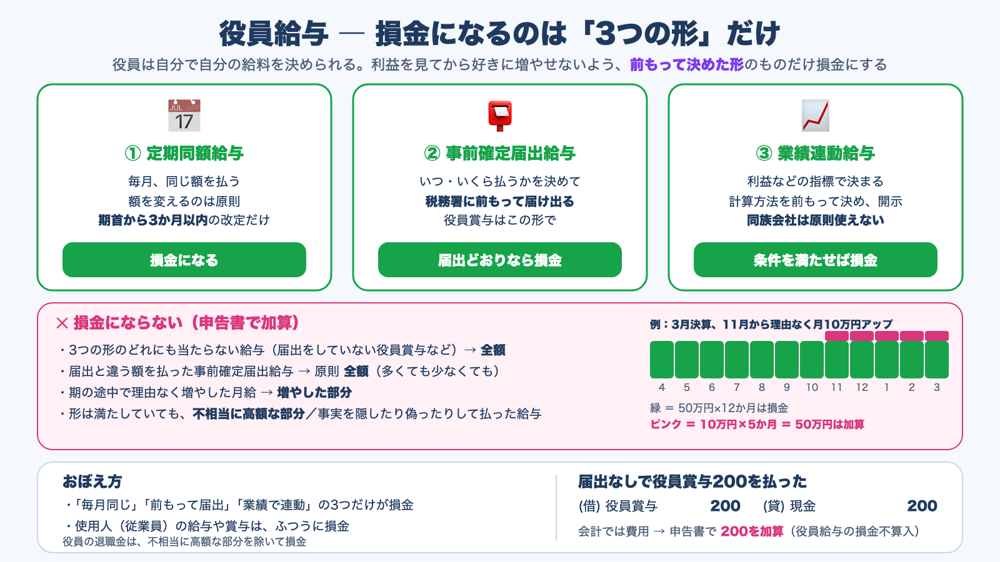
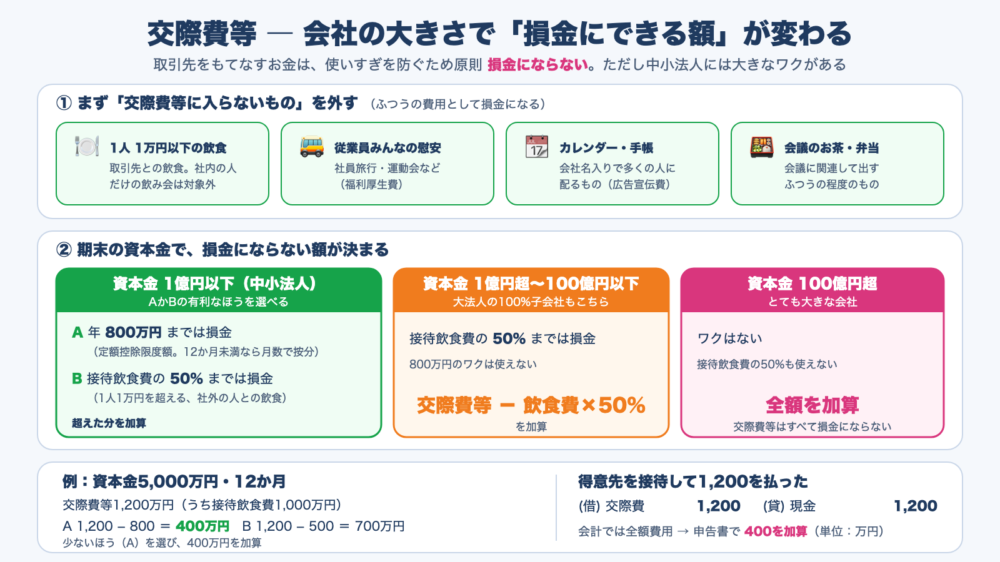

税理士試験法人税法 ／ 基礎編
法人税法は、論点が多くて重たい科目ですが、計算はどれも同じ型でできています。それが「決算書の当期利益から出発して、税法のルールで足したり（加算）引いたり（減算）して所得を出す」という流れです。この型を、小学生にもわかる言葉の図解と仕訳で順に確認し、計算問題4問と○×問題50問で仕上げます。
法人税は、会社のもうけ（所得）にかかる税です。ただし、決算書の利益をそのまま使うのではなく、税法のものさしで線を引き直します。まずこの「当期利益 → 所得 → 税額」の流れと、だれが・いつ申告するのかをおさえます。

益金算入
会計では収益でないが、税では益金に入れるもの
損金不算入
会計では費用だが、税では損金にならないもの
益金不算入
会計では収益だが、税では益金に入れないもの
損金算入
会計では費用でないが、税では損金にできるもの
X社（3月決算、事業年度12か月、期末資本金3,000万円の中小法人）の当期の資料です。年800万円以下の部分の税率は15%、それを超える部分は23.2%とし、地方法人税は考えません。
益金は、会計の収益とほとんど同じです。ちがうのは、タダで渡したりもらったりした取引も益金になることと、二重課税などを防ぐために「益金に入れない」と決められたものがあることです。
タダで渡した（無償譲渡）時価1,000の土地（帳簿価額600）を取引先にあげた
タダでもらった（受贈益）取引先から時価500の備品をもらった

Y社が当期に受け取った配当は次のとおりです（すべて内国法人からの配当、源泉所得税は考えない）。関連法人株式等の負債利子は、配当の4%とします。
損金も、会計の費用がもとになります。ただし、税金・減価償却・役員給与などは、会社が好きな額を費用にして税を減らせないように、税法で「損金にできる範囲」が決められています。
売上原価など
売れた商品の原価、完成工事原価
販売費・一般管理費など
償却費以外は、期末までに債務が確定しているものだけ
損失
災害の損失など。資本等取引は除く


Z社（3月決算、事業年度12か月）の当期の資料です。
どちらも「事業に必要か、はっきりしない支出」です。全部を損金にすると税が減りすぎるので、損金にできる額に上限があります。計算問題でよく出る、加算額を出す型をおさえます。

W社（3月決算、事業年度12か月、期末資本金5,000万円の中小法人）が交際費勘定に計上した額は13,000,000です。その内訳は次のとおりです。
○か×を選ぶと、「ここがポイント」「ひっかけ例（または正しい文）」「なぜ？」「具体例で確認」「覚えるポイント」「仕訳で確認」「根拠」がすぐに出ます。分野で絞り込んだり、順番をシャッフルしたりできます。
つなげて覚えるコツ：法人税法の計算は、どれも「当期利益 ＋ 加算 − 減算 ＝ 所得」の形です。各論点は、会計とどこがちがうから「足す」のか「引く」のかを決めるためのルールだと考えると、論点どうしがつながります。迷ったら「所得（税をかける金額）が増えるなら加算、減るなら減算」と考えましょう。